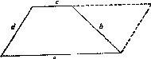

让我们试试别的。当c增加到等于a，会发生什么情况?梯形变成一个平行四
边形。我们能利用它吗?稍许加以审视(图22)，我们就会注意到在画平行四边形
时，在原梯形图上所附加的那个三角形。这个三角形很容易作图，因为我们知
道三个数据：其三边为b，d和a—c。
图22
变更原问题(作梯形)后，我们得到一个更好接近的辅助问题(作三角形
图)。利用辅助问题的结果，我们容易地解决了我们原来的问题(但必须完成平
行四边形)。
我们的例子是典型的。我们第一次尝试失败了，这也是典型的。但回顾这
点，我们可以看出第一次尝试并非如此无用。在其中含有某些念头；特别是，
它给我们一个机会去想起用三角形作为达到目的的手段。实际上，我们是通过
修改第一次不成功的试验才达到第二次成功的试验的。我们变更c：先试验把它
减少，然后试验把它增加。
(6)如上例所述，我们经常需要试验对问题作各种修改。我们必须一再地
变化它，重新叙述它，变换它，直到最后成功地找到某些有用的东西为止。我
们可以从失败中学习；在不成功的试验中可能存在有好念头，并且我们通过修
改一个不成功的试验可以达到一个较成功的试验。在各种试验以后，我们经常
得到一个更好下手的辅助问题(如上例所示)。
(7)存在着某些变化问题的模式，它们是典型有用的，例如“回到定义去”，
“分解与重新组合”，“引入辅助元素”，“普遍化”，“特殊化”，以及利
用“类比”。
(8)在前面第(3)点谈到可引起我们兴趣的新问题，所谈内容对于正确使用
我们的表很重要。
教师可以利用这张表去帮助他的学生。如果学生有进展，无需帮助，教师
就不应当问他任何问题而应任其独自工作，这对他独立工作的能力显然有益。
但当学生停滞不前时，教师当然应该尝试找一个适当的问题或建议去帮助他。
这是因为担心学生对问题感到疲倦而扔下它，或者失去兴趣从而由于纯粹的漠
不关心而铸成大错。
我们在解决自己的问题时也可以利用这张表。为了正确地使用它，我们照
上面例子那样进行。当我们进展顺利时，当新的标记自动涌现时，如果拿一些
多余的问题妨碍我们的自然进展，简直是愚蠢。但当我们进展不顺利，想不起
什么念头，我们则有对问题感到厌倦的危险。这时正是去思索某个有帮助的一
般性念头、或思索表中哪个问题与建议可能合适的好时机。而任何一个可能指